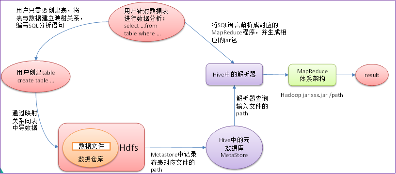
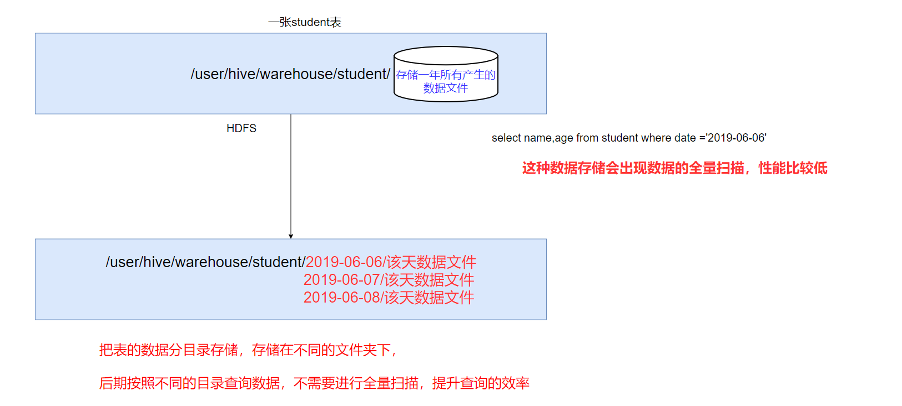
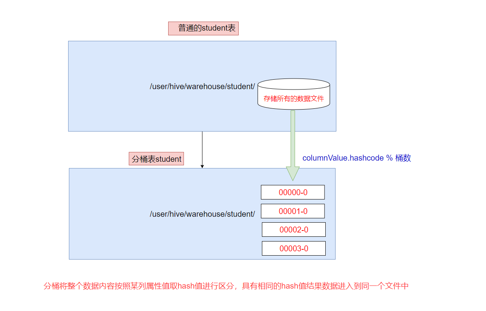
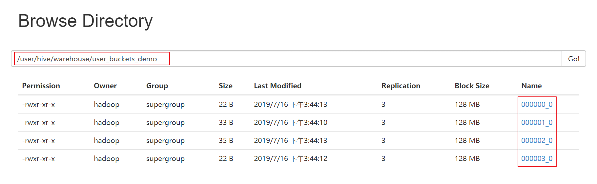
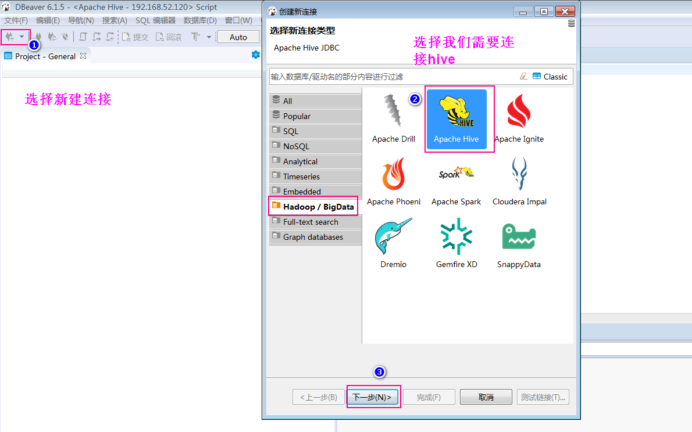
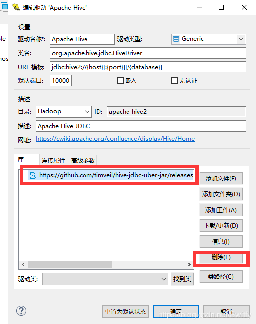
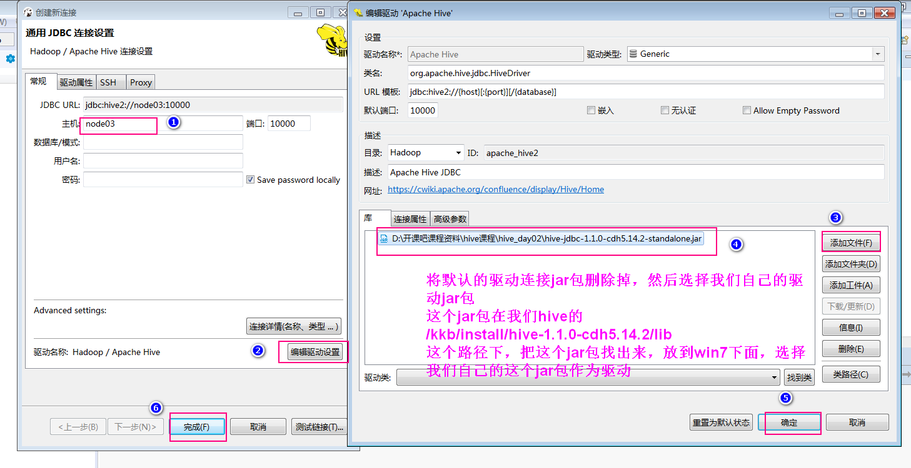

1.数据仓库的基本概念
1.数据仓库的基本概念
英文名称为Data Warehouse，可简写为DW或DWH。数据仓库的目的是构建面向分析的集成化数据环境，为企业提供决策支持（Decision Support）。它出于分析性报告和决策支持目的而创建。
数据仓库本身并不“生产”任何数据，同时自身也不需要“消费”任何的数据，数据来源于外部，并且开放给外部应用，这也是为什么叫“仓库”，而不叫“工厂”的原因。
2.数据仓库的主要特征
数据仓库是面向主题的（Subject-Oriented）、集成的（Integrated）、非易失的（Non-Volatile）和时变的（Time-Variant ）数据集合，用以支持管理决策。
3. 数据仓库与数据库区别
数据库与数据仓库的区别实际讲的是 OLTP 与 OLAP 的区别。
操作型处理，叫联机事务处理 OLTP（On-Line Transaction Processing，），也可以称面向交易的处理系统，它是针对具体业务在数据库联机的日常操作，通常对少数记录进行查询、修改。用户较为关心操作的响应时间、数据的安全性、完整性和并发支持的用户数等问题。传统的数据库系统作为数据管理的主要手段，主要用于操作型处理。
分析型处理，叫联机分析处理 OLAP（On-Line Analytical Processing）一般针对某些主题的历史数据进行分析，支持管理决策。
首先要明白，数据仓库的出现，并不是要取代数据库。
数据库是面向事务的设计，数据仓库是面向主题设计的。
数据库一般存储业务数据，数据仓库存储的一般是历史数据。
数据库设计是尽量避免冗余，一般针对某一业务应用进行设计，比如一张简单的User表，记录用户名、密码等简单数据即可，符合业务应用，但是不符合分析。数据仓库在设计是有意引入冗余，依照分析需求，分析维度、分析指标进行设计。
数据库是为捕获数据而设计，数据仓库是为分析数据而设计。
以银行业务为例。数据库是事务系统的数据平台，客户在银行做的每笔交易都会写入数据库，被记录下来，这里，可以简单地理解为用数据库记账。数据仓库是分析系统的数据平台，它从事务系统获取数据，并做汇总、加工，为决策者提供决策的依据。比如，某银行某分行一个月发生多少交易，该分行当前存款余额是多少。如果存款又多，消费交易又多，那么该地区就有必要设立ATM了。
显然，银行的交易量是巨大的，通常以百万甚至千万次来计算。事务系统是实时的，这就要求时效性，客户存一笔钱需要几十秒是无法忍受的，这就要求数据库只能存储很短一段时间的数据。而分析系统是事后的，它要提供关注时间段内所有的有效数据。这些数据是海量的，汇总计算起来也要慢一些，但是，只要能够提供有效的分析数据就达到目的了。
数据仓库，是在数据库已经大量存在的情况下，为了进一步挖掘数据资源、为了决策需要而产生的，它决不是所谓的“大型数据库”。
4.数据仓库分层架构
按照数据流入流出的过程，数据仓库架构可分为三层——源数据、数据仓库、数据应用。
数据仓库的数据来源于不同的源数据，并提供多样的数据应用，数据自下而上流入数据仓库后向上层开放应用，而数据仓库只是中间集成化数据管理的一个平台。
源数据层（ODS）：此层数据无任何更改，直接沿用外围系统数据结构和数据，不对外开放；为临时存储层，是接口数据的临时存储区域，为后一步的数据处理做准备。
数据仓库层（DW）：也称为细节层，DW层的数据应该是一致的、准确的、干净的数据，即对源系统数据进行了清洗（去除了杂质）后的数据。
数据应用层（DA或APP）：前端应用直接读取的数据源；根据报表、专题分析需求而计算生成的数据。
数据仓库从各数据源获取数据及在数据仓库内的数据转换和流动都可以认为是ETL（抽取Extra, 转化Transfer, 装载Load）的过程，ETL是数据仓库的流水线，也可以认为是数据仓库的血液，它维系着数据仓库中数据的新陈代谢，而数据仓库日常的管理和维护工作的大部分精力就是保持ETL的正常和稳定。
为什么要对数据仓库分层？
用空间换时间，通过大量的预处理来提升应用系统的用户体验（效率），因此数据仓库会存在大量冗余的数据；不分层的话，如果源业务系统的业务规则发生变化将会影响整个数据清洗过程，工作量巨大。
通过数据分层管理可以简化数据清洗的过程，因为把原来一步的工作分到了多个步骤去完成，相当于把一个复杂的工作拆成了多个简单的工作，把一个大的黑盒变成了一个白盒，每一层的处理逻辑都相对简单和容易理解，这样我们比较容易保证每一个步骤的正确性，当数据发生错误的时候，往往我们只需要局部调整某个步骤即可。
2. Hive是什么
1 hive的概念
Hive是基于Hadoop的一个数据仓库工具，==可以将结构化的数据文件映射为一张数据库表==，并提供类SQL查询功能。其本质是将SQL转换为MapReduce的任务进行运算，底层由HDFS来提供数据的存储，说白了hive可以理解为一个将SQL转换为MapReduce的任务的工具，甚至更进一步可以说hive就是一个MapReduce的客户端

2 Hive与数据库的区别

- Hive 具有 SQL 数据库的外表，但应用场景完全不同。
- ==Hive 只适合用来做海量离线数据统计分析，也就是数据仓库==。
3 Hive的优缺点
==优点==
操作接口采用类SQL语法，提供快速开发的能力（简单、容易上手）。
避免了去写MapReduce，减少开发人员的学习成本。
Hive支持用户自定义函数，用户可以根据自己的需求来实现自己的函数。
==缺点==
- Hive 不支持记录级别的增删改操作
- Hive 的查询延迟很严重
- hadoop jar xxxx.jar xxx.class /input /output
- 进行任务的划分，然后进行计算资源的申请
- map 0% reduce 0%
- map 10% reduce 0%
- hadoop jar xxxx.jar xxx.class /input /output
- Hive 不支持事务
4 Hive架构原理

- 1、用户接口：Client
- CLI（hive shell）、JDBC/ODBC(java访问hive)、WEBUI（浏览器访问hive）
2、元数据：Metastore
元数据包括：表名、表所属的数据库（默认是default）、表的拥有者、列/分区字段、表的类型（是否是外部表）、表的数据所在目录等；
- 默认存储在自带的derby数据库中，==推荐使用MySQL存储Metastore==
3、Hadoop集群
- 使用HDFS进行存储，使用MapReduce进行计算。
4、Driver：驱动器
- 解析器（SQL Parser）
- 将SQL字符串转换成抽象语法树AST
- 对AST进行语法分析，比如表是否存在、字段是否存在、SQL语义是否有误
- 编译器（Physical Plan）：将AST编译生成逻辑执行计划
- 优化器（Query Optimizer）：对逻辑执行计划进行优化
- 执行器（Execution）：把逻辑执行计划转换成可以运行的物理计划。对于Hive来说默认就是mapreduce任务
- 解析器（SQL Parser）

3. Hive的安装部署
hive安装部署
4. hive的交互方式
- ==先启动hadoop集群和mysql服务==
1 Hive交互shell
cd /kkb/install/hive-1.1.0-cdh5.14.2
bin/hive
2 Hive JDBC服务
启动hiveserver2服务
前台启动
cd /kkb/install/hive-1.1.0-cdh5.14.2 bin/hive --service hiveserver2后台启动
cd /kkb/install/hive-1.1.0-cdh5.14.2 nohup bin/hive --service hiveserver2 &beeline连接hiveserver2
重新开启一个会话窗口，然后使用beeline连接hive
cd /kkb/install/hive-1.1.0-cdh5.14.2 bin/beeline beeline> !connect jdbc:hive2://node03:10000
3 Hive的命令
- hive ==-e== sql语句
- 使用 –e 参数来直接执行hql的语句
cd /kkb/install/hive-1.1.0-cdh5.14.2/
bin/hive -e "show databases"
hive ==-f== sql文件
使用 –f 参数执行包含hql语句的文件
node03执行以下命令准备hive执行脚本
cd /kkb/install/ vim hive.sql 文件内容如下 create database if not exists myhive; 通过以下命令来执行我们的hive脚本 cd /kkb/install/hive-1.1.0-cdh5.14.2/ bin/hive -f /kkb/install/hive.sql
5、Hive的数据类型
1 基本数据类型
| 类型名称 | 描述 | 举例 |
|---|---|---|
| boolean | true/false | true |
| tinyint | 1字节的有符号整数 | 1 |
| smallint | 2字节的有符号整数 | 1 |
| ==int== | 4字节的有符号整数 | 1 |
| ==bigint== | 8字节的有符号整数 | 1 |
| float | 4字节单精度浮点数 | 1.0 |
| ==double== | 8字节单精度浮点数 | 1.0 |
| ==string== | 字符串(不设长度) | “abc” |
| varchar | 字符串（1-65355长度，超长截断） | “abc” |
| timestamp | 时间戳 | 1563157873 |
| date | 日期 | 20190715 |
2 复合数据类型
| 类型名称 | 描述 | 举例 |
|---|---|---|
| array | 一组有序的字段，字段类型必须相同 array(元素1，元素2) | Array（1,2,3） |
| map | 一组无序的键值对 map(k1,v1,k2,v2) | Map(‘a’,1,’b’,2) |
| struct | 一组命名的字段，字段类型可以不同 struct(元素1，元素2) | Struct(‘a’,1,2,0) |
array字段的元素访问方式：
下标获取元素，下标从0开始
获取第一个元素
- array[0]
map字段的元素访问方式
通过键获取值
获取a这个key对应的value
- map[‘a’]
- struct字段的元素获取方式
- 定义一个字段c的类型为struct{a int;b string}
- 获取a和b的值
- 使用c.a 和c.b 获取其中的元素值
- 这里可以把这种类型看成是一个对象
- 使用c.a 和c.b 获取其中的元素值
- 获取a和b的值
- 定义一个字段c的类型为struct{a int;b string}
create table complex(
col1 array<int>,
col2 map<string,int>,
col3 struct<a:string,b:int,c:double>
)
6、Hive的DDL操作
1 hive的数据库DDL操作
1、创建数据库
hive > create database db_hive;
# 或者
hive > create database if not exists db_hive;
- 数据库在HDFS上的默认存储路径是==/user/hive/warehouse/*.db==
2、显示所有数据库
hive> show databases;
3、查询数据库
hive> show databases like 'db_hive*';
4、查看数据库详情
hive> desc database db_hive;
5、显示数据库详细信息
hive> desc database extended db_hive;
6、切换当前数据库
hive > use db_hive;
7、删除数据库
#删除为空的数据库
hive> drop database db_hive;
#如果删除的数据库不存在，最好采用if exists 判断数据库是否存在
hive> drop database if exists db_hive;
#如果数据库中有表存在，这里需要使用cascade强制删除数据库
hive> drop database if exists db_hive cascade;
6.2 hive的表DDL操作
1 、建表语法介绍
CREATE [EXTERNAL] TABLE [IF NOT EXISTS] table_name
[(col_name data_type [COMMENT col_comment], ...)]
[COMMENT table_comment]
[PARTITIONED BY (col_name data_type [COMMENT col_comment], ...)] 分区
[CLUSTERED BY (col_name, col_name, ...) 分桶
[SORTED BY (col_name [ASC|DESC], ...)] INTO num_buckets BUCKETS]
[ROW FORMAT row_format] row format delimited fields terminated by “分隔符”
[STORED AS file_format]
[LOCATION hdfs_path]
官网地址：https://cwiki.apache.org/confluence/display/Hive/LanguageManual+DDL
2 、字段解释说明
create table
- 创建一个指定名字的表
EXTERNAL
- 创建一个外部表，在建表的同时指定一个指向实际数据的路径（LOCATION），指定表的数据保存在哪里
COMMENT
- 为表和列添加注释
PARTITIONED BY
- 创建分区表
CLUSTERED BY
- 创建分桶表
SORTED BY
- 按照字段排序（一般不常用）
ROW FORMAT
指定每一行中字段的分隔符
- row format delimited fields terminated by ‘\t’
- STORED AS
- 指定存储文件类型
- 常用的存储文件类型：SEQUENCEFILE（二进制序列文件）、TEXTFILE（文本）、RCFILE（列式存储格式文件）
- 如果文件数据是纯文本，可以使用STORED AS TEXTFILE。如果数据需要压缩，使用 STORED AS SEQUENCEFILE
- 指定存储文件类型
LOCATION
- 指定表在HDFS上的存储位置。
3、 创建内部表
- 1、==直接建表==
- 使用标准的建表语句
use myhive;
create table stu(id int,name string);
可以通过insert into 向hive表当中插入数据，但是不建议工作当中这么做
insert into stu(id,name) values(1,"zhangsan");
select * from stu;
- 2、==查询建表法==
- 通过AS 查询语句完成建表：将子查询的结果存在新表里，有数据
create table if not exists myhive.stu1 as select id, name from stu;
- 3、==like建表法==
- 根据已经存在的表结构创建表
create table if not exists myhive.stu2 like stu;
- 4、查询表的类型
hive > desc formatted myhive.stu;

创建内部表并指定字段之间的分隔符，指定文件的存储格式，以及数据存放的位置
create table if not exists myhive.stu3(id int ,name string)
row format delimited fields terminated by '\t' stored as textfile location '/user/stu2';
4、 创建外部表
外部表因为是指定其他的hdfs路径的数据加载到表当中来，所以hive表会认为自己不完全独占这份数据，所以删除hive表的时候，数据仍然存放在hdfs当中，不会删掉
create external table myhive.teacher (t_id string,t_name string) row format delimited fields terminated by '\t';
- 创建外部表的时候需要加上==external== 关键字
- location字段可以指定，也可以不指定
- 指定就是数据存放的具体目录
- 不指定就是使用默认目录 ==/user/hive/warehouse==

向外部表当中加载数据：
我们前面已经看到过通过insert的方式向内部表当中插入数据，外部表也可以通过insert的方式进行插入数据，只不过insert的方式，我们一般都不推荐，实际工作当中我们都是使用load的方式来加载数据到内部表或者外部表
load数据可以从本地文件系统加载或者也可以从hdfs上面的数据进行加载
从本地文件系统加载数据到teacher表当中去，==将我们附件当汇总的数据资料都上传到node03服务器的/kkb/install/hivedatas路径下面去==
mkdir -p /kkb/install/hivedatas #将数据都上传到/kkb/install/hivedatas路径下，然后在hive客户端下执行以下操作 load data local inpath '/kkb/install/hivedatas/teacher.csv' into table myhive.teacher;从hdfs上面加载文件到teacher表里面去(将teacher.csv文件上传到==hdfs的/kkb/hdfsload/hivedatas==路径下)
cd /kkb/install/hivedatas hdfs dfs -mkdir -p /kkb/hdfsload/hivedatas hdfs dfs -put teacher.csv /kkb/hdfsload/hivedatas # 在hive的客户端当中执行 load data inpath '/kkb/hdfsload/hivedatas' overwrite into table myhive.teacher;
5、 内部表与外部表的互相转换
- 1、内部表转换为外部表
#将stu内部表改为外部表
alter table stu set tblproperties('EXTERNAL'='TRUE');
- 2、外部表转换为内部表
#把emp外部表改为内部表
alter table teacher set tblproperties('EXTERNAL'='FALSE');
6、 内部表与外部表的区别
1、建表语法的区别
- 外部表在创建的时候需要加上==external==关键字
2、删除表之后的区别
- 内部表删除后，表的元数据和真实数据都被删除了
- 外部表删除后，仅仅只是把该表的元数据删除了，真实数据还在，后期还是可以恢复出来
7、内部表与外部表的使用时机
内部表由于删除表的时候会同步删除HDFS的数据文件，所以确定如果一个表仅仅是你独占使用，其他人不适用的时候就可以创建内部表，如果一个表的文件数据，其他人也要使用，那么就创建外部表
一般外部表都是用在数据仓库的ODS层
内部表都是用在数据仓库的DW层
8、hive的分区表
如果hive当中所有的数据都存入到一个文件夹下面，那么在使用MR计算程序的时候，读取一整个目录下面的所有文件来进行计算，就会变得特别慢，因为数据量太大了，实际工作当中一般都是计算前一天的数据，所以我们只需要将前一天的数据挑出来放到一个文件夹下面即可，专门去计算前一天的数据。这样就可以使用hive当中的分区表，通过分文件夹的形式，将每一天的数据都分成为一个文件夹，然后我们计算数据的时候，通过指定前一天的文件夹即可只计算前一天的数据。
在大数据中，最常用的一种思想就是分治，我们可以把大的文件切割划分成一个个的小的文件，这样每次操作一个小的文件就会很容易了，同样的道理，在hive当中也是支持这种思想的，就是我们可以把大的数据，按照每天，或者每小时进行切分成一个个的小的文件，这样去操作小的文件就会容易得多了

在文件系统上建立文件夹，把表的数据放在不同文件夹下面，加快查询速度。
创建分区表语法
hive (myhive)> create table score(s_id string,c_id string, s_score int) partitioned by (month string) row format delimited fields terminated by '\t';
创建一个表带多个分区
hive (myhive)> create table score2 (s_id string,c_id string, s_score int) partitioned by (year string,month string,day string) row format delimited fields terminated by '\t';
加载数据到分区表当中去
hive (myhive)>load data local inpath '/kkb/install/hivedatas/score.csv' into table score partition (month='201806');
加载数据到多分区表当中去
hive (myhive)> load data local inpath '/kkb/install/hivedatas/score.csv' into table score2 partition(year='2018',month='06',day='01');
查看分区
hive (myhive)> show partitions score;
添加一个分区
hive (myhive)> alter table score add partition(month='201805');
同时添加多个分区
hive (myhive)> alter table score add partition(month='201804') partition(month = '201803');
注意：添加分区之后就可以在hdfs文件系统当中看到表下面多了一个文件夹
删除分区
hive (myhive)> alter table score drop partition(month = '201806');
外部分区表综合练习：
需求描述：现在有一个文件score.csv文件，里面有三个字段，分别是s_id string, c_id string,s_score int，字段都是使用 \t进行分割，存放在集群的这个目录下/scoredatas/day=20180607，这个文件每天都会生成，存放到对应的日期文件夹下面去，文件别人也需要公用，不能移动。需求，创建hive对应的表，并将数据加载到表中，进行数据统计分析，且删除表之后，数据不能删除
需求实现:
数据准备:
node03执行以下命令，将数据上传到hdfs上面去
将我们的score.csv上传到node03服务器的/kkb/install/hivedatas目录下，然后将score.csv文件上传到/kkb/install/hivedatas目录下去
cd /kkb/install/hivedatas/
hdfs dfs -mkdir -p /scoredatas/day=20180607
hdfs dfs -put score.csv /scoredatas/day=20180607/
创建外部分区表，并指定文件数据存放目录
hive (myhive)> create external table score4(s_id string, c_id string,s_score int) partitioned by (day string) row format delimited fields terminated by '\t' location '/scoredatas';
进行表的修复,说白了就是建立我们表与我们数据文件之间的一个关系映射
hive (myhive)> msck repair table score4;
修复成功之后即可看到数据已经全部加载到表当中去了
9、hive的分桶表

分桶是相对分区进行更细粒度的划分。
==分桶将整个数据内容安装某列属性值取hash值进行区分，具有相同hash值的数据进入到同一个文件中==
- 比如按照name属性分为3个桶，就是对name属性值的hash值对3取摸，按照取模结果对数据分桶。
- 取模结果为==0==的数据记录存放到一个文件
- 取模结果为==1==的数据记录存放到一个文件
- 取模结果为==2==的数据记录存放到一个文件
- 取模结果为==3==的数据记录存放到一个文件
- 比如按照name属性分为3个桶，就是对name属性值的hash值对3取摸，按照取模结果对数据分桶。
==作用==
- 1、取样sampling更高效。没有分区的话需要扫描整个数据集。
- 2、提升某些查询操作效率，例如map side join
案例演示
1、创建分桶表
- 在创建分桶表之前要执行的命令
- ==set hive.enforce.bucketing=true;== 开启对分桶表的支持
- ==set mapreduce.job.reduces=4;== 设置与桶相同的reduce个数（默认只有一个reduce）
# 进入hive客户端然后执行以下命令 use myhive; set mapreduce.job.reduces=4; set hive.enforce.bucketing=true; --分桶表 create table myhive.user_buckets_demo(id int, name string) clustered by(id) into 4 buckets row format delimited fields terminated by '\t'; --普通表 create table user_demo(id int, name string) row format delimited fields terminated by '\t';- 在创建分桶表之前要执行的命令
2、准备数据文件 buckets.txt
#在linux当中执行以下命令 cd /kkb/install/hivedatas/ vim user_bucket.txt 1 laowang1 2 laowang2 3 laowang3 4 laowang4 5 laowang5 6 laowang6 7 laowang7 8 laowang8 9 laowang9 10 laowang10
`- 3、加载数据到普通表 user_demo 中
load data local inpath ‘/kkb/install/hivedatas/user_bucket.txt’ overwrite into table user_demo;
```sql
#在hive客户端当中加载数据
load data local inpath '/kkb/install/hivedatas/user_bucket.txt' into table user_demo;
4、加载数据到桶表user_buckets_demo中
insert into table user_buckets_demo select * from user_demo;
5、hdfs上查看表的数据目录

- 6、抽样查询桶表的数据
- tablesample抽样语句，语法：tablesample(bucket x out of y)
- x表示从第几个桶开始取数据
- y表示桶数的倍数，一共需要从 ==桶数/y== 个桶中取数据
- tablesample抽样语句，语法：tablesample(bucket x out of y)
select * from user_buckets_demo tablesample(bucket 1 out of 2)
-- 需要的总桶数=4/2=2个
-- 先从第1个桶中取出数据
-- 再从第1+2=3个桶中取出数据
7、Hive修改表结构
修改表名称语法
alter table old_table_name rename to new_table_name;
7.1 修改表的名称
hive> alter table stu3 rename to stu4;
7.2 表的结构信息
hive> desc stu4;
hive> desc formatted stu4;
7.3 增加/修改/替换列信息
- 增加列
hive> alter table stu4 add columns(address string);
- 修改列
hive> alter table stu4 change column address address_id int;
8. Hive数据导入
8.1、直接向表中插入数据（强烈不推荐使用）
hive (myhive)> create table score3 like score;
hive (myhive)> insert into table score3 partition(month ='201807') values ('001','002','100');
8.2、通过load方式加载数据（必须掌握）
语法：
hive> load data [local] inpath 'dataPath' overwrite | into table student [partition (partcol1=val1,…)];
通过load方式加载数据
hive (myhive)> load data local inpath '/kkb/install/hivedatas/score.csv' overwrite into table score3 partition(month='201806');
8.3、通过查询方式加载数据（必须掌握）
通过查询方式加载数据
hive (myhive)> create table score5 like score;
hive (myhive)> insert overwrite table score5 partition(month = '201806') select s_id,c_id,s_score from score;
8.4、查询语句中创建表并加载数据（as select）
将查询的结果保存到一张表当中去
hive (myhive)> create table score6 as select * from score;
8.5、创建表时通过location指定加载数据路径
1）创建表，并指定在hdfs上的位置
hive (myhive)> create external table score7 (s_id string,c_id string,s_score int) row format delimited fields terminated by '\t' location '/myscore7';
2）上传数据到hdfs上，我们也可以直接在hive客户端下面通过dfs命令来进行操作hdfs的数据
hive (myhive)> dfs -mkdir -p /myscore7;
hive (myhive)> dfs -put /kkb/install/hivedatas/score.csv /myscore7;
3）查询数据
hive (myhive)> select * from score7;
8.6、export导出与import 导入 hive表数据（内部表操作）
hive (myhive)> create table teacher2 like teacher;
hive (myhive)> export table teacher to '/kkb/teacher';
hive (myhive)> import table teacher2 from '/kkb/teacher';
9、Hive数据导出
9.1 insert 导出
- 1、将查询的结果导出到本地
insert overwrite local directory '/kkb/install/hivedatas/stu' select * from stu;
- 2、将查询的结果格式化导出到本地
insert overwrite local directory '/kkb/install/hivedatas/stu2' row format delimited fields terminated by ',' select * from stu;
- 3、将查询的结果导出到HDFS上==(没有local)==
insert overwrite directory '/kkb/hivedatas/stu' row format delimited fields terminated by ',' select * from stu;
9.2、 Hive Shell 命令导出
基本语法：
- hive -e “sql语句” > file
- hive -f sql文件 > file
bin/hive -e 'select * from myhive.stu;' > /kkb/install/hivedatas/student1.txt
9.3、export导出到HDFS上
export table myhive.stu to '/kkb/install/hivedatas/stuexport';
10、hive的静态分区和动态分区
10.1 静态分区
表的分区字段的值需要开发人员手动给定
- 1、创建分区表
use myhive; create table order_partition( order_number string, order_price double, order_time string ) partitioned BY(month string) row format delimited fields terminated by '\t';
- 10.2、准备数据 order.txt内容如下
cd /kkb/install/hivedatas
vim order.txt
10001 100 2019-03-02
10002 200 2019-03-02
10003 300 2019-03-02
10004 400 2019-03-03
10005 500 2019-03-03
10006 600 2019-03-03
10007 700 2019-03-04
10008 800 2019-03-04
10009 900 2019-03-04
3、加载数据到分区表
load data local inpath '/kkb/install/hivedatas/order.txt' overwrite into table order_partition partition(month='2019-03');4、查询结果数据
~~~sql
select * from order_partition where month=’2019-03’;
结果为：
10001 100.0 2019-03-02 2019-03
10002 200.0 2019-03-02 2019-03
10003 300.0 2019-03-02 2019-03
10004 400.0 2019-03-03 2019-03
10005 500.0 2019-03-03 2019-03
10006 600.0 2019-03-03 2019-03
10007 700.0 2019-03-04 2019-03
10008 800.0 2019-03-04 2019-03
10009 900.0 2019-03-04 2019-03
#### .2 动态分区
- 按照需求实现把数据自动导入到表的不同分区中，==不需要手动指定==
- **需求：按照不同部门作为分区导数据到目标表**
1、创建表
~~~sql
--创建普通表
create table t_order(
order_number string,
order_price double,
order_time string
)row format delimited fields terminated by '\t';
--创建目标分区表
create table order_dynamic_partition(
order_number string,
order_price double
)partitioned BY(order_time string)
row format delimited fields terminated by '\t';
2、准备数据 order_created.txt内容如下
~~~sql
cd /kkb/install/hivedatas
vim order_partition.txt
10001 100 2019-03-02
10002 200 2019-03-02
10003 300 2019-03-02
10004 400 2019-03-03
10005 500 2019-03-03
10006 600 2019-03-03
10007 700 2019-03-04
10008 800 2019-03-04
10009 900 2019-03-04
~~~
3、向普通表t_order加载数据
```
load data local inpath '/kkb/install/hivedatas/order_partition.txt' overwrite into table t_order;
```
4、动态加载数据到分区表中
```
要想进行动态分区，需要设置参数
//开启动态分区功能
hive> set hive.exec.dynamic.partition=true;
//设置hive为非严格模式
hive> set hive.exec.dynamic.partition.mode=nonstrict;
hive> insert into table order_dynamic_partition partition(order_time) select order_number,order_price,order_time from t_order;
```
5、查看分区
```
bin/hive> show partitions order_dynamic_partition;
```

11、hive的基本查询语法
1. 基本查询
- 注意
- SQL 语言==大小写不敏感==
- SQL 可以写在一行或者多行
- ==关键字不能被缩写也不能分行==
- 各子句一般要分行写
- 使用缩进提高语句的可读性
1.1 全表和特定列查询
- 全表查询
select * from stu;
- 选择特定列查询
select id,name from stu;
1.2 列起别名
重命名一个列
- 紧跟列名，也可以在列名和别名之间加入关键字 ‘as’
案例实操
select id,name as stuName from stu;
1.3 常用函数
- 1．求总行数（count）
select count(*) cnt from score;
- 2、求分数的最大值（max）
select max(s_score) from score;
- 3、求分数的最小值（min）
select min(s_score) from score;
- 4、求分数的总和（sum）
select sum(s_score) from score;
- 5、求分数的平均值（avg）
select avg(s_score) from score;
1.4 limit 语句
- 典型的查询会返回多行数据。limit子句用于限制返回的行数。
select * from score limit 5;
1.5 where 语句
- 1、使用 where 子句，将不满足条件的行过滤掉
- 2、==where 子句紧随from子句==
- 3、案例实操
select * from score where s_score > 60;
1.6 算术运算符
| 运算符 | 描述 | |
|---|---|---|
| A+B | A和B 相加 | |
| A-B | A减去B | |
| A*B | A和B 相乘 | |
| A/B | A除以B | |
| A%B | A对B取余 | |
| A&B | A和B按位取与 | |
| A\ | B | A和B按位取或 |
| A^B | A和B按位取异或 | |
| ~A | A按位取反 |
1.7 比较运算符
| 操作符 | 支持的数据类型 | 描述 |
|---|---|---|
| A=B | 基本数据类型 | 如果A等于B则返回true，反之返回false |
| A<=>B | 基本数据类型 | 如果A和B都为NULL，则返回true，其他的和等号（=）操作符的结果一致，如果任一为NULL则结果为NULL |
| A<>B, A!=B | 基本数据类型 | A或者B为NULL则返回NULL；如果A不等于B，则返回true，反之返回false |
| A<B | 基本数据类型 | A或者B为NULL，则返回NULL；如果A小于B，则返回true，反之返回false |
| A<=B | 基本数据类型 | A或者B为NULL，则返回NULL；如果A小于等于B，则返回true，反之返回false |
| A>B | 基本数据类型 | A或者B为NULL，则返回NULL；如果A大于B，则返回true，反之返回false |
| A>=B | 基本数据类型 | A或者B为NULL，则返回NULL；如果A大于等于B，则返回true，反之返回false |
| A [NOT] BETWEEN B AND C | 基本数据类型 | 如果A，B或者C任一为NULL，则结果为NULL。如果A的值大于等于B而且小于或等于C，则结果为true，反之为false。如果使用NOT关键字则可达到相反的效果。 |
| A IS NULL | 所有数据类型 | 如果A等于NULL，则返回true，反之返回false |
| A IS NOT NULL | 所有数据类型 | 如果A不等于NULL，则返回true，反之返回false |
| IN(数值1, 数值2) | 所有数据类型 | 使用 IN运算显示列表中的值 |
| A [NOT] LIKE B | STRING 类型 | B是一个SQL下的简单正则表达式，如果A与其匹配的话，则返回true；反之返回false。B的表达式说明如下：‘x%’表示A必须以字母‘x’开头，‘%x’表示A必须以字母’x’结尾，而‘%x%’表示A包含有字母’x’,可以位于开头，结尾或者字符串中间。如果使用NOT关键字则可达到相反的效果。like不是正则，而是通配符 |
| A RLIKE B, A REGEXP B | STRING 类型 | B是一个正则表达式，如果A与其匹配，则返回true；反之返回false。匹配使用的是JDK中的正则表达式接口实现的，因为正则也依据其中的规则。例如，正则表达式必须和整个字符串A相匹配，而不是只需与其字符串匹配。 |
1.8 逻辑运算符
| 操作符 | 操作 | 描述 |
|---|---|---|
| A AND B | 逻辑并 | 如果A和B都是true则为true，否则false |
| A OR B | 逻辑或 | 如果A或B或两者都是true则为true，否则false |
| NOT A | 逻辑否 | 如果A为false则为true,否则false |
2. 分组
2.1 Group By 语句
Group By 语句通常会和==聚合函数==一起使用，按照一个或者多个列队结果进行分组，然后对每个组执行聚合操作。
案例实操：
- （1）计算每个学生的平均分数
select s_id,avg(s_score) from score group by s_id;- （2）计算每个学生最高的分数
select s_id,max(s_score) from score group by s_id;
2.2 Having语句
having 与 where 不同点
- where针对==表中的列发挥作用==，查询数据；==having针对查询结果中的列==发挥作用，筛选数据
- where后面==不能写分组函数==，而having后面可以==使用分组函数==
- having只用于group by分组统计语句
案例实操
- 求每个学生的平均分数
select s_id,avg(s_score) from score group by s_id;- 求每个学生平均分数大于60的人
select s_id,avg(s_score) as avgScore from score group by s_id having avgScore > 60;
3. join语句
11.3.1 等值 join
Hive支持通常的SQL JOIN语句，但是只支持等值连接，不支持非等值连接。
案例实操
- 根据学生和成绩表，查询学生姓名对应的成绩
select * from stu left join score on stu.id = score.s_id;
11.3.2 表的别名
好处
- 使用别名可以简化查询。
- 使用表名前缀可以提高执行效率。
案例实操
- 合并老师与课程表
#hive当中创建course表并加载数据 create table course (c_id string,c_name string,t_id string) row format delimited fields terminated by '\t'; load data local inpath '/kkb/install/hivedatas/course.csv' overwrite into table course; select * from teacher t join course c on t.t_id = c.t_id;
11.3.3 内连接 inner join
- 内连接：只有进行连接的两个表中都存在与连接条件相匹配的数据才会被保留下来。
- join默认是inner join
- 案例实操
select * from teacher t inner join course c on t.t_id = c.t_id;
11.3.4 左外连接 left outer join
左外连接：join操作符==左边表中==符合where子句的所有记录将会被返回。
案例实操
- 查询老师对应的课程
select * from teacher t left outer join course c on t.t_id = c.t_id;
3.5 右外连接 right outer join
右外连接：join操作符==右边表中==符合where子句的所有记录将会被返回。
案例实操
select * from teacher t right outer join course c on t.t_id = c.t_id;
11.3.6 满外连接 full outer join
满外连接：将会返回==所有表中==符合where语句条件的所有记录。如果任一表的指定字段没有符合条件的值的话，那么就使用null值替代。
案例实操
select * from teacher t full outer join course c on t.t_id = c.t_id;
11.3.7 多表连接
多个表使用join进行连接
注意：连接 n个表，至少需要n-1个连接条件。例如：连接三个表，至少需要两个连接条件。
案例实操
- 多表连接查询，查询老师对应的课程，以及对应的分数，对应的学生
select * from teacher t left join course c on t.t_id = c.t_id left join score s on c.c_id = s.c_id left join stu on s.s_id = stu.id;
11.4. 排序
11.4.1 order by 全局排序
order by 说明
- 全局排序，只有一个reduce
- 使用 ORDER BY 子句排序
- asc ( ascend)
- 升序 (默认)
- desc (descend)
- 降序
- asc ( ascend)
- order by 子句在select语句的结尾
案例实操
- 查询学生的成绩，并按照分数降序排列
select * from score s order by s_score desc ;
11.4.2 按照别名排序
- 按照学生分数的平均值排序
select s_id,avg(s_score) avgscore from score group by s_id order by avgscore desc;
11.4.3 每个MapReduce内部排序（Sort By）局部排序
sort by：每个reducer内部进行排序，对全局结果集来说不是排序。
1、设置reduce个数
set mapreduce.job.reduces=3;2、查看reduce的个数
set mapreduce.job.reduces;3、查询成绩按照成绩降序排列
select * from score s sort by s.s_score;4、将查询结果导入到文件中（按照成绩降序排列）
insert overwrite local directory '/kkb/install/hivedatas/sort' select * from score s sort by s.s_score;
11.4.4 distribute by 分区排序
distribute by：类似MR中partition，==采集hash算法，在map端将查询的结果中hash值相同的结果分发到对应的reduce文件中==。结合sort by使用。
注意
- Hive要求 distribute by 语句要写在 sort by 语句之前。
案例实操
先按照学生 sid 进行分区，再按照学生成绩进行排序
- 设置reduce的个数
set mapreduce.job.reduces=3;- 通过distribute by 进行数据的分区,，将不同的sid 划分到对应的reduce当中去
insert overwrite local directory '/kkb/install/hivedatas/distribute' select * from score distribute by s_id sort by s_score;
11.4.5 cluster by
当distribute by和sort by字段相同时，可以使用cluster by方式
除了distribute by 的功能外，还会对该字段进行排序，所以cluster by = distribute by + sort by
`sql
–以下两种写法等价insert overwrite local directory ‘/kkb/install/hivedatas/distribute_sort’ select * from score distribute by s_score sort by s_score;
insert overwrite local directory ‘/kkb/install/hivedatas/cluster’ select * from score cluster by s_score;
### 12、hive客户端jdbc操作
#### 第一步：启动hiveserver2的服务端
node03执行以下命令启动hiveserver2的服务端
cd /kkb/install/hive-1.1.0-cdh5.14.2/
nohup bin/hive –service hiveserver2 2>&1 &
#### 第二步：引入依赖
```xml
<repositories>
<repository>
<id>cloudera</id>
<url>https://repository.cloudera.com/artifactory/cloudera-repos/</url>
</repository>
</repositories>
<dependencies>
<dependency>
<groupId>org.apache.hive</groupId>
<artifactId>hive-exec</artifactId>
<version>1.1.0-cdh5.14.2</version>
</dependency>
<dependency>
<groupId>org.apache.hive</groupId>
<artifactId>hive-jdbc</artifactId>
<version>1.1.0-cdh5.14.2</version>
</dependency>
<dependency>
<groupId>org.apache.hive</groupId>
<artifactId>hive-cli</artifactId>
<version>1.1.0-cdh5.14.2</version>
</dependency>
<dependency>
<groupId>org.apache.hadoop</groupId>
<artifactId>hadoop-common</artifactId>
<version>2.6.0-cdh5.14.2</version>
</dependency>
</dependencies>
<build>
<plugins>
<plugin>
<groupId>org.apache.maven.plugins</groupId>
<artifactId>maven-compiler-plugin</artifactId>
<version>3.0</version>
<configuration>
<source>1.8</source>
<target>1.8</target>
<encoding>UTF-8</encoding>
<!-- <verbal>true</verbal>-->
</configuration>
</plugin>
</plugins>
</build>
第三步：代码开发
import java.sql.*;
public class HiveJDBC {
private static String url="jdbc:hive2://192.168.52.120:10000/myhive";
public static void main(String[] args) throws Exception {
Class.forName("org.apache.hive.jdbc.HiveDriver");
//获取数据库连接
Connection connection = DriverManager.getConnection(url, "hadoop","");
//定义查询的sql语句
String sql="select * from stu";
try {
PreparedStatement ps = connection.prepareStatement(sql);
ResultSet rs = ps.executeQuery();
while (rs.next()){
//获取id字段值
int id = rs.getInt(1);
//获取deptid字段
String name = rs.getString(2);
System.out.println(id+"\t"+name);
}
} catch (SQLException e) {
e.printStackTrace();
}
}
}
、hive的可视化工具dbeaver介绍以及使用
1、dbeaver的基本介绍
dbeaver是一个图形化的界面工具，专门用于与各种数据库的集成，通过dbeaver我们可以与各种数据库进行集成通过图形化界面的方式来操作我们的数据库与数据库表，类似于我们的sqlyog或者navicate
2、dbeaver的下载安装
https://github.com/dbeaver/dbeaver/releases
我们可以直接从github上面下载我们需要的对应的安装包即可
3、dbeaver的安装与使用
这里我们使用的版本是6.15这个版本，下载zip的压缩包，直接解压就可以使用，然后双击dbeaver.exe即可启动
第一步：双击dbeaver.exe然后启动dbeaver图形化界面

第二步：配置我们的主机名与端口号


注意：⚠️
企业hive可视化工具：Hub